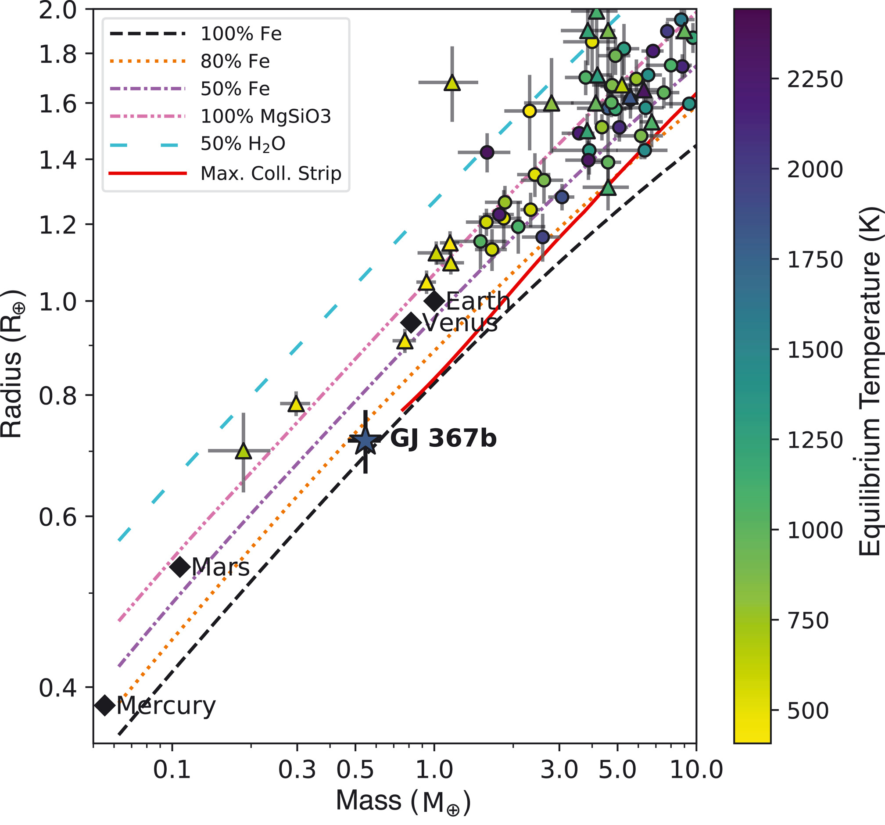
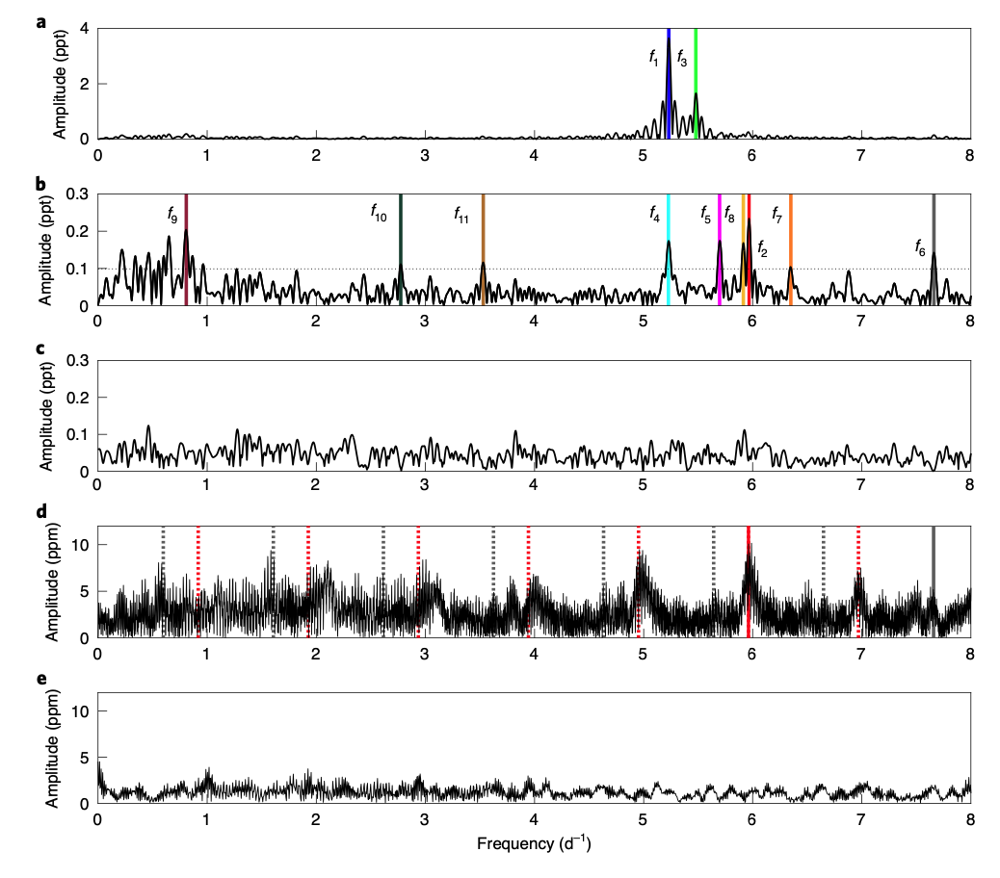
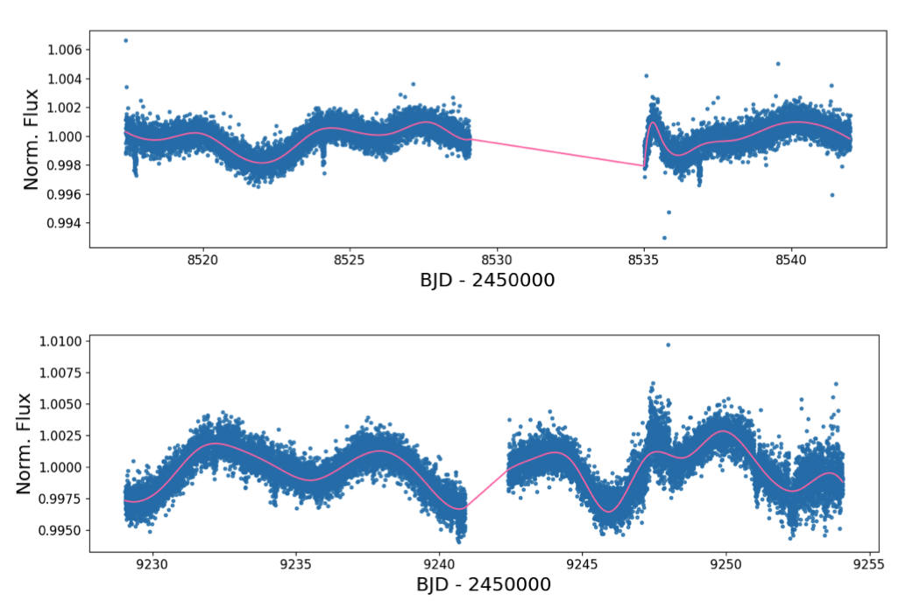

STATUS UPDATE: Orbit 2 of Sector 45 and orbit 1 of Sector 46 are now available to download as a TICA product from MAST.
Happy new year TESS followers! In 2022 we look forward to yet another a year full of TESS science. This week we are looking at three papers from the archive.
GJ 367b: A dense, ultrashort-period sub-Earth planet transiting a nearby red dwarf star (Lam et. al., 2021) :
GJ 367 is a cool M-dwarf planet located 9.41 pc from our Sun with a V-band magnitude of 10.2. Using TESS data scientists have discovered a planet orbiting this dwarf with a 7.7 hr period, making it an ultrashort-period exoplanet.
Stellar properties were obtained using the High Accuracy Radial Velocity Planet Searcher (HARPS) and are as follows: Teff = 3519 K, mass = 0.454 M⊙, radius 0.457 R⊙, and luminosity 0.0288 L⊙.
The properties of the planet, GJ 367b, were derived using data from a variety of facilities. Transit measurements indicated a radius of 0.718 R⊕, and radial velocity measurements indicated a mass of 0.546 M⊕. This makes the body a sub-Earth exoplanet with a bulk density of 8.106 g cm-3, close to that of pure iron. Using a neural network the interior structure of the planet was investigated with final results predicting that the planet has an iron core radius fraction of 86%, a <10% water ice and/or a H and He gas envelope, and a silicate mantle - all of which make the planet similar in composition to that of Mercury.
Given the planets close proximity to its host it receives a substantial amount of stellar irradiation, approximately 576 times that which we receive her on Earth. The day side temperature of GJ 367b is therefore 1745 K which would be enough to evaporate any sort of early atmosphere, in addition to vaporizing or melting silicates or metallic iron. Please see the fascinating Science paper for more information.
Polarimetric detection of non-radial oscillation modes in the β Cephei star β Crucis (Cotton et. al., 2021) :
β Cephei stars are high mass stars ( 8–25 M⨀) that are seismically active and as such they pulsate. The pulsation modes of these stars are however of low radial order and do not have recognizable frequency patterns, which makes mode assignment difficult and as such asteroseismic inference of the stellar interior. Understanding these stars is of vital importance since they are the progenitors of core-collapse supernovae and black holes.
Due to a lack of high cadenced data in multiple bands, obtaining modes and increasing our understanding has been difficult. In this paper detailed TESS observations of β Crucis have been combined together with data from WISE, AAT (linear polarimetric observations), and other facilities to carry out a joint frequency analysis. This analysis revealed two modes in β Cru with small polarimetric amplitudes and several further modes which are predicted to have polarimetric amplitudes just below the detection threshold. , β Crucis is now the highest-mass β Cep star with such asteroseismic information.
Through their study the authors have confirmed the 40-year-old predictions of pulsation-induced polarization variability and its utility in asteroseismology for mode identification, see this Nature paper for more information.
TOI 560 : Two Transiting Planets Orbiting a K Dwarf Validated with iSHELL, PFS and HIRES RVs (Mufti et. al., 2021) :
In this paper the authors validate the presence of a system with two planets, TOI 560. This system consists of a 0.2-1.4 Gyr K4 dwarf, a moderately eccentric (e=0.294) transiting mini-Neptune (TOI 560 b) with a period of 6.397438, and a transiting mini-Neptune (TOI 560 c) with a period of 18.8779 days. Both planets were discovered using TESS data and the resonance derived as 1:3.
Through the examination of data from TESS, Spitzer, and other ground-based facilities, the ephemerides and period of the transiting planets were derived. Follow-up spectroscopy and radial velocities were obtained with iSHELL and HIRES and used to derive the masses of the two planets as Mb < 2.1 MNep, and Mc < 4.1 MNep.
For more information about this system and the stellar activity of the host star please read this paper.

Fig. 1: Taken from Lam et. al., (2021). Masses and radii of small planets (< 2 R⊕) that have both quantities measured with precision ≤30%.Symbols indicate masses determined with RVs (circles) and transit timing variations (triangles), Solar System planets (diamonds), and GJ 367b (star). Error bars show 1-sigma uncertainties. Exoplanet symbols are color coded according to the equilibrium dayside temperatures (color bar). Theoretical mass-radius relations for two-layer rocky planets are shown with lines corresponding to different core mass fractions. These cores consist of pure iron, pure rock (100% MgSiO3), or a two-layer core with a mixture of iron and rock or rock and H2O ice, as indicated in the legend. The solid red line denotes the lower limit on planet radius after collisional stripping. GJ 367b is likely an iron-dominated planet.

Fig. 2: Taken from Cotton et. al., (2021). The amplitude spectrum derived from the TESS time series for f ∈ [0, 8] d−1. Colored vertical lines illustrate the two oscillation modes with the largest amplitudes; other frequencies are not obvious in the amplitude spectrum until prewhitening has been performed. b, The amplitude spectra derived from the TESS time series (in black), after prewhitening for f1 and f3. Peak locations are identified by colored vertical lines. The horizontal dotted line indicates SNR = 4. c, The TESS amplitude spectrum after 23 identified modes have been prewhitened, as discussed in the text. While some peaks remain at the <0.1 ppt level, none of these reaches our required significance level. d, The amplitude spectrum from HIPPI-2 Q/I polarimetry. The complex quasiperiodic structure visible is due to diurnal (and other) aliasing and illustrates the value of using multiple datasets to determine which peaks are ‘real’. Here the red and grey vertical lines mark the two detected oscillation modes in this dataset, while the matching dotted lines show the locations of predicted ± 1, 2, 3,... d−1 alias peaks. e, The same HIPPI-2 Q/I amplitude spectrum after prewhitening 23 frequencies. The U/I spectra are similar and are shown in Supplementary Fig. 2. Note: 1 ppt = 1000 ppm.

Fig. 3: Taken from Mufti et. al., (2021). The TESS PDC-SAP light curves of TOI 560 from Sectors 8 (top) and 34 (bottom), plotting the normal- ized flux on the vertical axes as a function of time on the horizontal axes. The light curves are shown as blue data points, and the cubic spline regression is shown as the pink line. The interpolation in the data gap downlink region in the middle of each sector is subsequently discarded in our analysis. Significant photometric modulation due to stellar activity is apparent in both sectors.